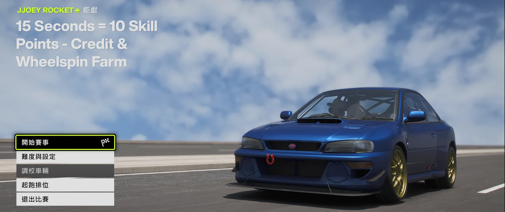
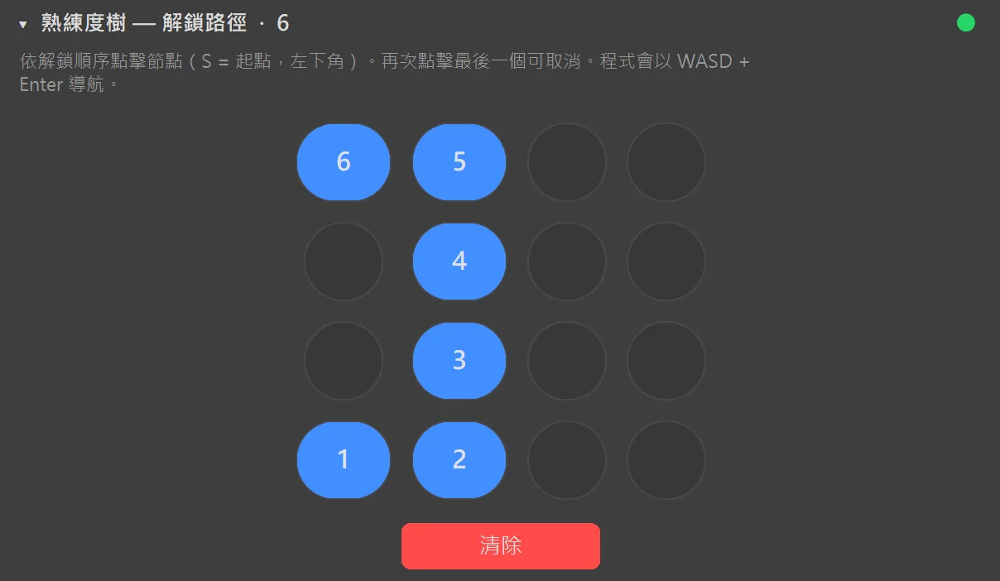
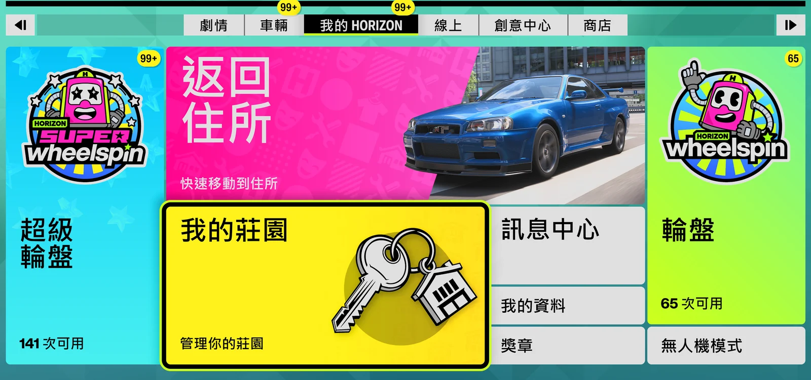
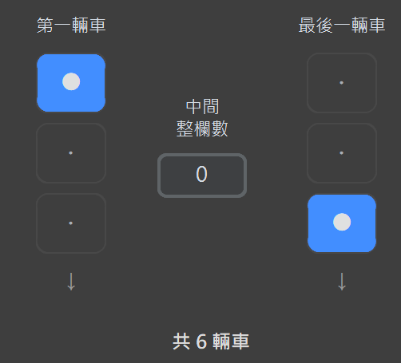

地平線 6 如何用 FAFE 掛機刷錢跟技能點
FAFE 可以自動處理累積技能點、批次購買車輛、從相容車輛的熟練度樹解鎖幸運轉盤，以及領取轉盤獎勵時的重複操作。本指南會完整說明公開免費版的各項功能與安全準備方式。
FAFE 掛機刷錢流程
- 掛機競速：重複指定的 EventLab 競速，FAFE 會處理開始、駕駛與重新開始，協助累積技能點。
- 自動購車：手動開啟任何可購買車輛即可批次購買；從主選單開始則使用 22B-STI 自動預設路線。
- 解鎖幸運轉盤：選擇連續的車庫區塊，依熟練度網格解鎖指定節點。
- 自動幸運轉盤：執行一般或超級幸運轉盤、自動領取獎勵，並處理重複車輛。
- 刪除已使用車輛：確認範圍後，清理已經處理完成的車輛。
因此搜尋「地平線 6 刷錢」、「地平線 6 掛機」或「地平線 6 技能點」時，FAFE 的用途是減少遊戲內獎勵流程中的重複鍵盤與滑鼠操作，而不是修改你的點數。
第一次使用前的設定
- 使用無邊框或視窗模式執行 Forza Horizon 6。
- 在 FAFE 選擇正確的遊戲螢幕。
- 讓 FAFE 的遊戲選單語言與 Forza 畫面語言一致。
- 遊戲可以被其他視窗遮住或失去焦點，但不能最小化。
- 若 Forza 以系統管理員身分執行，FAFE 也必須以系統管理員身分執行。

使用 F9 開始或停止。倒數時間為3 秒；啟用背景模式時，不需要切換回 Forza。正式掛機前，請先設定少量次數並觀看「活動」記錄，確認每個功能都能完成一次。
用掛機競速累積技能點
使用全滿升級且維持原廠烤漆的 Subaru Impreza 22B-STI。開啟自動轉向、循跡控制與穩定控制；排檔依 EventLab 地圖要求選擇手排或自排；並將「抬頭顯示器與遊戲 → 技術」設為關閉。確認最近遊玩的 EventLab 是你要重複執行的競速。你可以從主選單開始，也可以自行停在「開始競速」畫面。
- FAFE 偵測「開始競速」並進入活動。
- 倒數完成後持續按住 W。
- 偵測結算／重新開始畫面，放開 W 並重新開始。
- 持續循環，直到達到設定次數或你按 F9。

先在旁邊觀看一次完整循環。若選單漏接按鍵，請提高「競速按鍵後等待」；較弱的 CPU 可提高「競速偵測間隔」。
批次購買車輛
FAFE 可以重複購買「車輛收藏」中任何可購買的車輛。自行開啟車輛收藏、選擇想購買的車，並停在可購買的車輛詳細頁面。若改從主選單開始，FAFE 則會使用內建路線前往 Subaru Impreza 22B-STI。

第一次先設定少量購買次數，確認完成一次購買後能回到相同畫面，再執行較大的批次。
準備熟練度樹幸運轉盤解鎖
在「我的車輛」依最近新增排序。使用 FAFE 的車庫區塊選擇器，標記一段只包含目標車輛的連續範圍。第一輛車可位於起始欄的上、中、下任一列。移動順序為每欄由上到下，再前往下一欄，不是蛇形。
從 S 起點開始，按照實際移動順序點選每一個必要節點。此功能不限於 22B-STI，適用於任何相容車輛；熟練度樹配置或目標路徑不同的車輛不要放進同一選定範圍。此功能使用 WASD 與 Enter，不依賴畫面樣本。

若較慢的電腦漏接輸入，請提高「過場動畫等待」、「節點解鎖間隔」或「選單點按間隔」。
用幸運轉盤取得點數與獎勵
選擇一般或超級幸運轉盤，並設定重複車輛的處理方式。FAFE 會開始轉盤、嘗試略過揭曉動畫、等待領取提示、收取獎勵，並處理最多三個重複車輛選單。

只有在你能接受無人值守出售時，才選擇出售。超級幸運轉盤會一次領取三個獎勵。
安全刪除已處理的車輛
完成熟練度獎勵解鎖後，「刪除已使用車輛」可以逐一刪除連續的車庫範圍。使用與熟練度功能相同的車庫區塊選擇器標記第一輛與最後一輛車，開始前務必再次確認範圍。

刪除後無法復原。第一次請使用非常小的範圍，並確保無關或珍貴車輛不在選定區塊內。
提高穩定度的設定
- 背景模式：遊戲失去焦點或被遮住時仍可運作，但不能最小化。
- OCR：除非小視窗的文字比對需要協助，否則保持關閉以降低 CPU 使用率。
- 偵測除錯快照：只在診斷問題時啟用。
- 時間滑桿：低幀率造成漏接時，請提高對應等待時間。
- 英文輸入法：若中文輸入法可能攔截遊戲按鍵，請保留自動切換英文輸入法。
疑難排解與錯誤回報
- 按鍵完全沒有作用：檢查遊戲與 FAFE 的系統管理員權限是否一致，並確認目前輸入法。
- 偵測一直等待：確認樣本語言與預期遊戲畫面。持續等待是刻意設計；需要復原時按 F9。
- 黑畫面或畫面不更新：確認遊戲沒有被最小化。
- CPU 使用率高：關閉 OCR 與除錯快照，並提高偵測間隔。
問題發生時請停留在原本的失敗畫面並按 F12。FAFE 會建立包含標註偵測截圖與記錄的 zip，方便貼到 Discord 錯誤回報區。
常見問題
FAFE 會直接增加遊戲點數嗎？
不會。FAFE 只會模擬鍵盤與滑鼠輸入，協助執行遊戲內競速、熟練度與幸運轉盤流程，不會修改記憶體或點數餘額。
掛機時還能使用電腦嗎？
背景模式可以讀取並控制被遮住或失去焦點的遊戲視窗。遊戲不能最小化，因為最小化後無法持續產生可偵測的畫面。
使用自動化完全沒有風險嗎？
任何自動化工具都無法保證帳號零風險。請自行評估，並在離開電腦前先測試每個功能。
下載 FAFE
直接下載最新 Windows 版 FAFE，或返回 FAFE 首頁查看畫面與功能介紹。